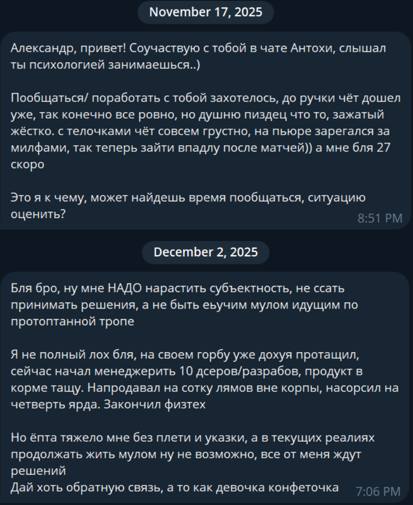
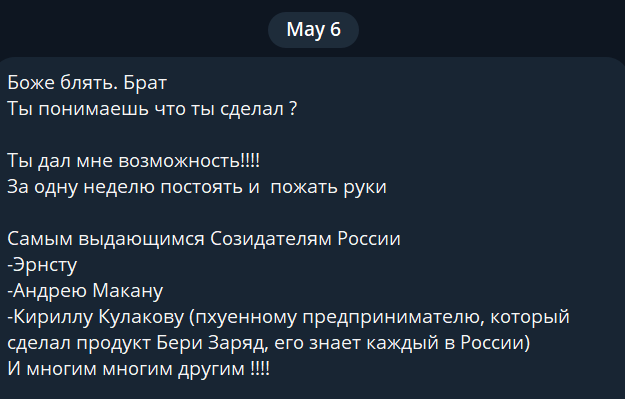
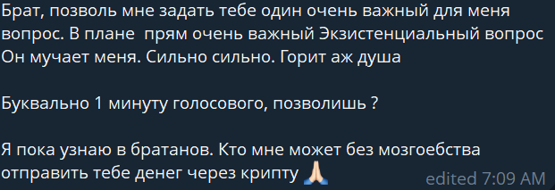
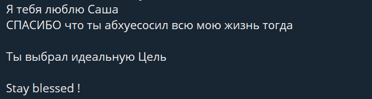

ВЫТАЩИТЬ БИЗНЕС ИЗ БОЛОТА В Х2–Х5 ЗА 90 ДНЕЙ.
Для микробизнеса — жесткий спринт до $10,000/мес под камерами. Для взрослого бизнеса — возврат сна, фокуса и кратный пробой потолка в режиме полной секретности. Не хочешь денег — закрывай вкладку, тебе никакой экзорцизм не поможет.
Раньше я продюсировал моделей на OnlyFans. Правило конвейера простое: если девочка без опыта не козлит — за 3 месяца она пробивает $10,000 чистыми. Если начинает ныть и искать отмазки — улетает в дроп.
Взрослого фаундера с продуктом и базовой логикой провести через кратный рост в разы проще. Твой бизнес буксует не из-за рынка. Он стоит, потому что ты заражен вирусом малодушия: кормишь нахлебников, которые кладут ноги на стол, сливаешь фокус и слушаешь штат дорогих «внутренних адвокатов», которые всей толпой жалеют тебя.
В марте 26-го вышел из храма Кришны, где с 2 ночи драил котлы и туалеты в подвале. Первую предоплату за экзорцизм словил на телефон, выйдя из подвала с ершиком в руках поймать сеть.
В апреле паканули в армейку. Из 11 человек, с которыми я там плотно взаимодействовал и провел сессии, 6 покинули армию, я вышел 7-м, а двое осознанно решили служить дальше. Первым на выход пошел самый хромой после публичного экзорцизма.
Никакой психотерапии на 5 лет. По телефону за 20 минут вытаскиваю на допрос ту сущность (баг/программу) в твоей башке, которая жрет твой ресурс. Она сама твоим же ртом выписывает тебе протокол действий — и тебя попускает.
Куда ты сейчас сливаешь свой бизнес и жизнь? (9 мужских хобби-убийц):
Тапни на любую карточку ниже, чтобы открыть полное досье механизма слива (закрывается тапом в любое место вне окна).
На треках за $3k и $5k работает двухкомпонентная модель: фиксированный вход на старте + 10% десятины только с НОВЫХ денег, которые ты зарабатываешь поверх своего старого потолка. Старый доход остается при тебе.
Почему почти вдвое дешевле базы? Недостающие $2k ты доплачиваешь своей шкурой и публичностью. Весь твой путь из болота до десятки идет под камерами: с видеоотзывами, открытыми интервью и разбором твоих затыков на публику. Спрятаться в кусты не выйдет.
Анонимный вход для тех, у кого есть оборот (кейсы по цеху с $200k до $700k) и кому «Интерпол в окна по ночам заглядывает». Эту пятерку ты отобьешь в первую же неделю просто за счет того, что мы уволим чмошников со своей шеи.
Я не зарабатываю с этого трека: все $10k уходят строго на организацию опыта в Испании (трансферы, повара, локации). Пересобираем физиологию и смыслы, избавляем от страхов смерти, одиночества, тюрьмы и потери рассудка. Десятины нет — благодарность строго по желанию.
От кривых заходов и квестов «как отправить крипту» до рукопожатий с топами рынка за одну неделю.





Работаем по договору с фиксацией Точки А, распиской о невменяемости/фарме и двукратным откатом за крысятничество.